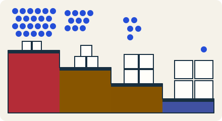

Scale the data · 3 minutes
Hot, warm, cold and archive
Old data is rarely read, so keep it somewhere cheaper and slower.
Open this lesson
Not all data is equal
Data can move to cheaper storage as it ages. Compare the saving with the delay when an old object is needed again.
Try the idea
You hold 120 TB and most of it is old. Move it to cheaper storage to cut the bill.
Key numbers
- Fast storage
- ≈ $23 per TB-month. object standard, approx.
- Rarely read storage
- ≈ $12 per TB-month. approx.
- Archive
- ≈ $1 to $4 per TB-month. minutes to hours to get back, approx.
Check your reasoning
Think through these questions before opening the lesson. In the game you can test the idea and compare your reasoning.
- What do you give up for cheaper storage?
- A law says keep invoices 7 years but nobody reads them. Which tier?
- Who should decide when data moves down a tier?
The key point
Match storage to how often data is read, and move it down as it ages.
Practise this idea
- Hard
Object storage service
Customers store billions of files, from tiny pictures to huge videos, and fetch them by name. The service must never lose a file, scale without a limit and stay cheap. Most files are written once and rarely read again.
- Easy
Photo sharing
You are building a photo app. People post pictures and everyone else scrolls through them. Almost all the traffic is people looking at photos, and the photos take up far more room than anything else you store.
- Medium
Video streaming
You run a movie and series service for a growing audience. Each viewer pulls a few seconds of video at a time for two hours straight. Bandwidth is the largest cost by far, and everyone wants to start watching in the evening.
- Medium
Disappearing stories
People post photos and short clips that vanish after 24 hours. Followers tap through a tray of stories every day, and the poster sees who looked. Deleting on time matters: storage must not grow forever.